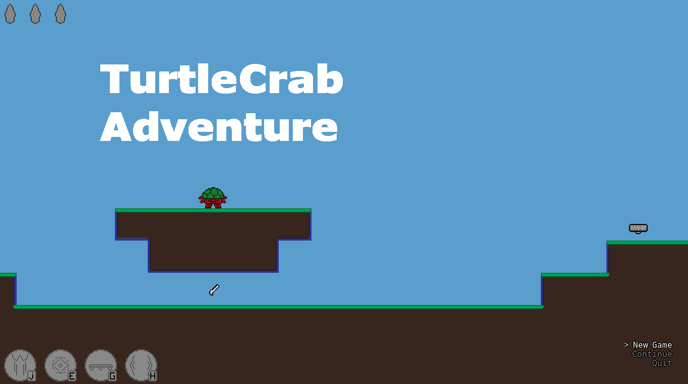
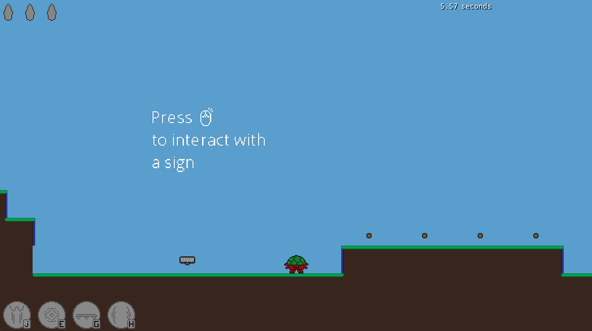
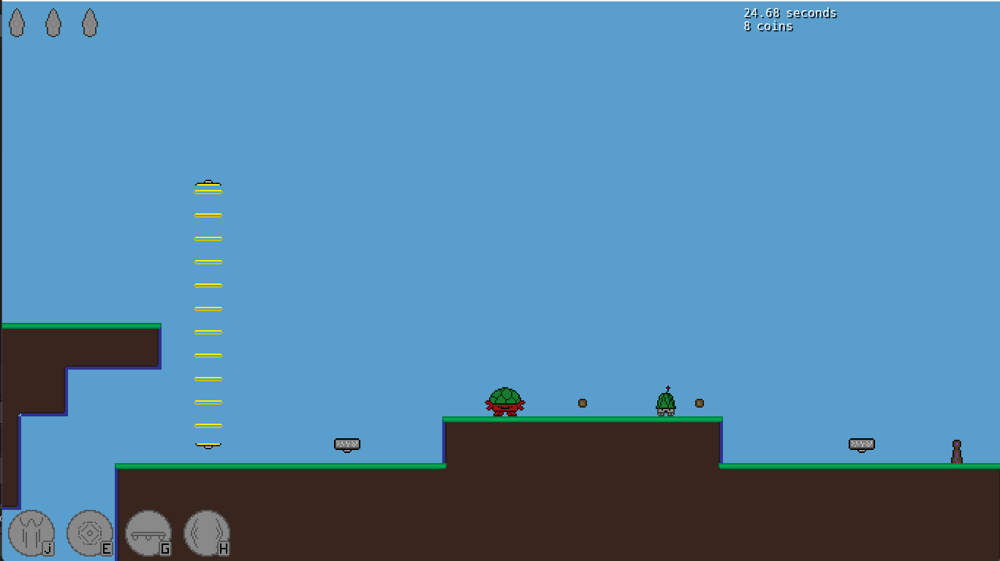
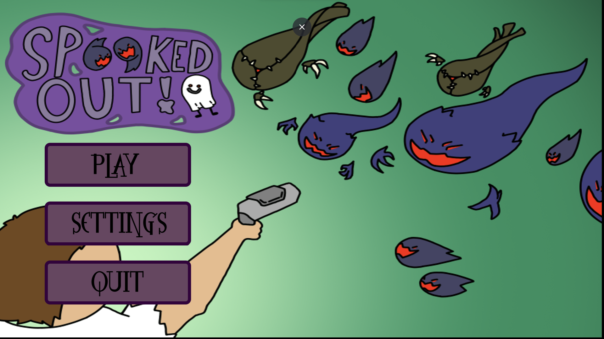
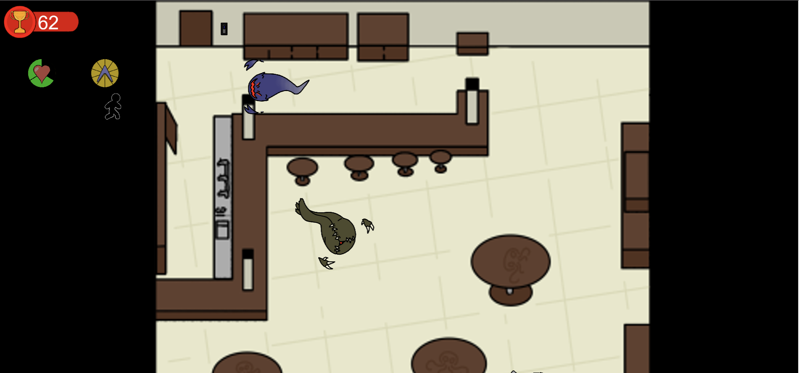
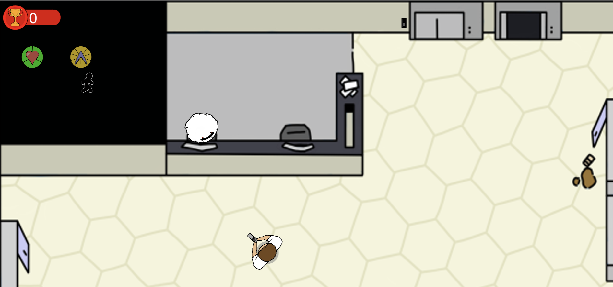
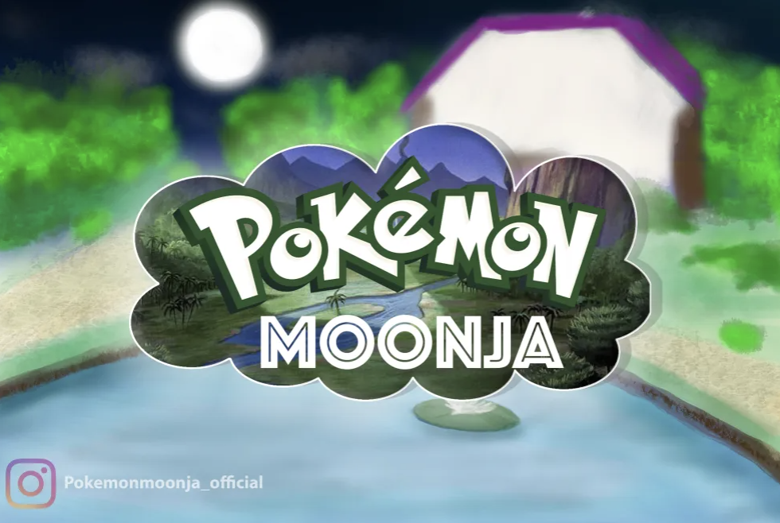
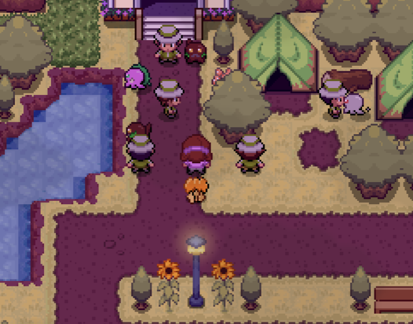
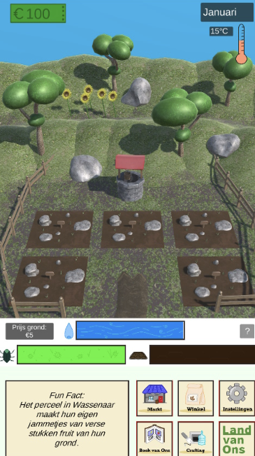

Rik Wijtman
Wie ben ik?
Ik ben Rik Wijtman momenteel 18 Jaar oud en zit op Hogeschool Rotterdam op de studie CMGT (Creative media and game technologies). Ik vermaak mezelf altijd met het maken van game art en andere tekeningen, verder maak ik ook nog games in mijn vrije tijd. Daarnaast ben ik ook altijd fan van gezelligheid en een lekker weertje en zit daarom wel vaker lekker op het terras. Momenteel werk ik ook op een terras/restaurant in Delft als barman en bediening als bijbaan. Ik ben ben altijd klaar voor nieuwe uitdagingen en om nieuwe dingen te leren. Daarnaast hou ik er ook erg van om nieuwe dingen uit te proberen en verder te experimenteren.
Mijn vaardigheden:
Ik ben in mijn vrije tijd veel bezig met Unity en ben dus ook wel redelijk ervaren in programmeren met C#. Verder heb ik ook al een tijd ervaring met javascript door te werken met websites en browser games. Ik heb ook ervaring met andere kleinere programmeer talen zoals de taal van Gamemaker studio, dit is een unieke taal erg vergelijkbaar met simpel typescript.
Mijn projecten:
Turtlecrab adventure
Het eerste project waar ik ooit mee begonnen ben heet Turtlecrab adventures, dit is ook de eerste echte game die ik heb gemaakt. Voor deze game gebruikte ik toen de tijd Gamemaker studio nog, dit was een erg simpele game engine die gebruik maakte van hun eigen script, dit viel erg te vergelijken met typescript. Turtlecrab adventures was een 2d platformer game waarin je energy verzamelt om speciale abilities te gebruiken. Hierbij had je een super jump, invisibility shield, temporary platform en een schokgolf aanval. Net zoals in mario bros kon je in dit spel coins verzamelen en ook een soort star coins, alleen in dit spel zijn het verschillende gems, deze zie je links boven aan in het beeldscherm.
 Spooked out
De tweede game die ik ooit heb gemaakt is spooked out, hier heb ik aan gewerkt met drie anderen voor mijn school project. Het spel was een 2d dungeon crawler waarin je spoken moest verslaan en je een vervloekt gebouw moest ontdekken. Het spel had meerdere levels en hier kreeg je dan ook punten voor als je het level haalde. In elk level had je verschillende spooksoorten, deze hadden verschillende snelheden, hit points en abilities. Ook zaten er boss battles in het spel, je had drie verschillende: Een kwam om de twintig levels en viel je aan met enemies en gooide objecten naar je toe. Een kon je vinden in de kelder map in een verstopt luik, deze blokkeerde een gedeelte van je aanvallen en reflecteerde deze terug. En de laatste kon je vinden via een secret in de bathrooms, deze gooide met vuurballen en stuurde kleinere enemies op je af. Voor spooked out ben ik vooral bezig geweest met het maken van de art en hier en daar een beetje helpen met programmeren waar nodig was. Onderaan deze pagina staat de link waarin je het spel kan spelen.
  Spooked out!Pokemon Moonja
Pokemon Moonja was de tweede game waar ik ooit aan heb gewerkt, we zijn nogsteeds hard bezig om Pokemon Moonja volledig uit te brengen. Pokemon Moonja is een simpele pokemon game met onze eigen gemaakte pokemon erin, alle sprites die in de game zitten hebben we ook zelf gemaakt. Pokemon Moonja word nu aan gewerkt met een groepje van ongeveer zes developers, hierin heb ik de taak om nieuwe ontwerpen te maken en alle getalletjes achter alle pokemon te verzinnen. De eerste demo is momenteel uit dus voel je vrij om deze te spelen.
Dove defenders
Dove defenders was mijn game die ik gemaakt heb voor de laatste periode van mijn eerste jaar. Het was een 2d tower defense game vergelijkbaar met Bloons tower defense, alleen moet je in dit spel zorgen dat duiven de overkant niet halen. Verder had je in het spel nog elements die je aan je torens kon geven, zo had je een ijs toren, een vuur toren etc. Ik heb het spel uiteindelijk helaas niet afgemaakt en de "Engine" waarmee ik het heb gebouwt helaas ligt ook plat. Ik heb hierboven wel een foto met wat assets van de game.
Ons land
Ons land is de game die ik met vier anderen heb gemaakt aan het begin van jaar twee. We hebben het spel gemaakt voor een organisatie genaamd Land van ons, met behulp van dit spel willen we mensen informeren over Land van ons en hun goede doelen. Het spel viel te vergelijken met Hay Day alleen dan meer realistisch en meer gericht op de gewassen, zo moest je insecten bestrijden, goed op het weer letten en je waterpijl in de gaten houden. Ook kon je net zoals in Hay day je gewassen omzetten in echte producten, zo kon je pasta maken en zelfs bier, al deze producten waren ook nog eens echte producten die je in de Land van Ons webshop kon kopen. Voor deze game ben ik grotendeels bezig geweest met het programmeren, zo heb ik het crops planten, weather system en status bars gemaakt en ben daarnaast ook nog bezig geweest met het maken van de UI. De game is helaas niet volledig af door de tijd die we die periode ervoor hadden, maar als je benieuwd ben staat de website hieronder:
Website gamePokemon Realms
Pokemon Realms is een Pokemon game waar ik momenteel zelf mee bezig ben, hier ben ik nog maar net mee begonnen maar de eerste demo is momenteel bijna af. Voor dit spel doe ik dus alle delen, van het maken van de sprites tot het maken van muziek en geluid. Ik ben van plan de eerste demo rondomm Juli uit te brengen. Hiernaast maak ik ook official art van alle pokemon in de game, deze zijn hieronder te zien:
InstagramReefkeep
Reefkeep is het spel waar we momenteel heel de derde en vierde periode mee bezig zijn. Met behulp van dit spel willen we het SDG Life below water steunen, dit doen we door informatie mee te geven over hoe je dit SDG bestrijd en hoe alles wat hiermee te maken heeft in elkaar zit. In het spel moet je je eigen aquatisch ecosysteem opbouwen en beschermen tegen gevaarlijke stoffen, daarnaast moet je ook nog eens zorgen dat alle vissen gezond zijn en dat ze het naar hun zin hebben. We zijn hier momenteel nog hard mee bezig dus is er helaas nog niet veel om te laten zien. In dit spel ben ik ook grotendeels bezig met het maken van de pixelart maar ook de sound design en het maken van een storyline.